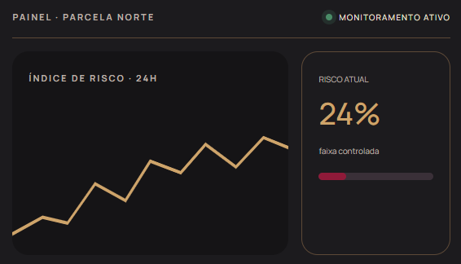

+Visão
Decisão baseada em contexto
Em vez de uma leitura genérica do clima, o produtor acompanha o comportamento da própria parcela.
Sense Noir
MICROCLIMA · PRECISÃO · VINHEDOSTecnologia preditiva para proteger a delicadeza da Pinot Noir, transformar dados do vinhedo em decisões e preservar cada safra antes que o risco se torne perda.
A Pinot Noir é uma variedade de uva especialmente sensível às mudanças do microclima. Pequenas oscilações de temperatura, umidade e chuva podem alterar as condições do vinhedo e favorecer o desenvolvimento de doenças.
Por isso, acompanhar essas variações é essencial para que o produtor identifique possíveis riscos antes que eles comprometam a safra. Com o Sense Noir, os dados coletados no próprio vinhedo ajudam a reconhecer áreas críticas e a orientar decisões mais preventivas, reduzindo a dependência de observações pontuais e previsões genéricas.


A temperatura influencia diretamente o desenvolvimento das videiras e o processo de maturação das uvas. Variações excessivas podem acelerar o amadurecimento, alterar o equilíbrio entre açúcares e acidez e comprometer as características que definem a qualidade da Pinot Noir. Monitorar essas oscilações permite identificar condições desfavoráveis e agir com maior precisão.

A umidade do ar e a presença de água na vegetação influenciam o microclima do vinhedo e o desenvolvimento de doenças fúngicas. Quando permanecem elevadas por períodos prolongados, especialmente em ambientes com pouca ventilação, podem aumentar a vulnerabilidade das videiras. Acompanhar essas condições ajuda a reconhecer cenários de risco e a planejar intervenções preventivas.

A chuva pode interromper atividades essenciais no vinhedo, dificultar o manejo e comprometer o momento ideal para intervenções na plantação. Identificar períodos de maior instabilidade climática ajuda o produtor a planejar suas ações com antecedência, reduzindo imprevistos e prejuízos durante o ciclo produtivo.
Sensores distribuídos no campo coletam variáveis microclimáticas continuamente. A plataforma interpreta esses dados e transforma leituras técnicas em alertas que o produtor consegue usar.

Sensores registram as condições reais do microclima em intervalos contínuos.
Os dados são cruzados para identificar padrões e condições de risco.
O produtor recebe sinais objetivos quando uma janela de atenção se aproxima.
A equipe decide onde, quando e como intervir com mais precisão.
Quando o risco é percebido mais cedo, o produtor ganha tempo para priorizar recursos, reduzir desperdícios e preservar a qualidade da produção.
Em vez de uma leitura genérica do clima, o produtor acompanha o comportamento da própria parcela.
Alertas antecipados ajudam a concentrar atenção nas áreas e momentos que exigem resposta.
Mais controle sobre o microclima contribui para proteger consistência e qualidade do produto final.
O míldio e o oídio são fungos que destroem as uvas e derrubam a sua produção. Simule quanto você perde por ano sem monitoramento e quanto pode salvar com o Sense Noir.
Uva destruída pelos fungos por ano sem o nosso produto
Dinheiro perdido por causa dos fungos
Faturamento sem nosso produto
Garrafas perdidas sem nosso produto
Faturamento com nosso produto
Proteja a sua safra antes que os fungos cheguem.
Contrate o nosso produto